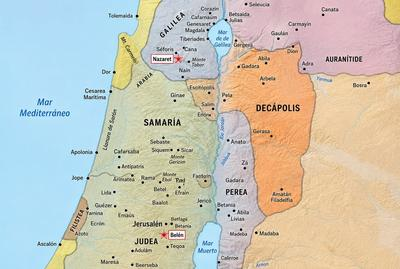

Entre la geografía incierta y la construcción narrativa de un «origen histórico»


Antes de entrar en los numerosos debates sobre la existencia histórica de Jesús, conviene detenerse en un hecho llamativo: incluso los datos más básicos que deberían identificar a un personaje histórico resultan ambiguos. Su nombre, su supuesto lugar de origen, e incluso el significado del apelativo con que pasó a la historia, presentan dificultades que van mucho más allá de simples diferencias de interpretación religiosa.
El propio nombre de «Jesús», no es neutro. Procede del arameo Yeshúa (ישוע), que pasó al griego como Iesoús (Iesoús), y posteriormente al latín como Iesus. Su significado es «Yahvé salva» o «Salvador»[1]. Nombre demasiado conveniente para quien se le atribuirá el papel de salvar. Según los evangelios, el «ángel del Señor» que a José se «le apareció en sueños», le indicó que a su hijastro debería dar el nombre de «Jesús», porque él rescataría a los israelitas, lo que refleja más una intención sobre el rol del personaje, más una interpretación religiosa, que un nombre personal. Sin embargo, en el mismo pasaje, el mismo ángel (personaje imaginario) también le dijo a José que al niño debería llamarlo «Emanuel», cuyo significado es, según dice el evangelio, «Yahvé con nosotros» (Mateo 1:20-23), un nombre que nunca vuelve a utilizarse en el resto de los evangelios.
Además, «Cristo», como también se suele identificar, tampoco es un nombre o un apellido. Es la forma griega de christós, equivalente al hebreo māšîaḥ (Mesías), cuyo significado es «ungido» o «embalsamado». Y es que, en la tradición judía, los reyes y ciertos líderes religiosos eran ungidos (untados generalmente en la cabeza con «aceite sagrado» mediante una ceremonia o ritual), como símbolo de su consagración. No eran coronados, sino ungidos. En consecuencia, «Jesucristo» significa literalmente «Salvador ungido», un título religioso, más que un nombre completo.
En la tradición judía era habitual identificar a una persona por el nombre de su padre. Así, un hombre llamado Jesús cuyo padre fuera José, debía ser conocido como Yeshúa bar Yosef, es decir, «Jesús, hijo de José». Pero cuando se desconocía el padre, o convenía distinguir mejor a alguien, era común también identificarlo por su lugar de procedencia, como María de Magdala o José de Arimatea. Y es precisamente aquí donde surge otro problema importante: ¿era realmente Jesús «de Nazaret»?
Los evangelios afirman que su familia vivía en Galilea, y sitúan a María, su madre, en Nazaret, cuando supuestamente recibió el anuncio del nacimiento de su primogénito (Lucas 1:26). Sin embargo, el mismo evangelista relata que Jesús nació en Belén de Judea, requisito indispensable para ajustarlo a las expectativas mesiánicas judías, ya que Belén habría sido el sitio de nacimiento de David (1 Samuel 16:18), y donde el profeta Miqueas (5:2) pronosticó que nacería el futuro rey de Israel. Así que, para explicar ese nacimiento, Lucas introduce un viaje de más de cien kilómetros de María en sus últimos días de embarazo, montada en un burro, motivado por un supuesto censo ordenado por Roma, del que no existe registro histórico.
Pero Mateo ofrece otra versión: después de narrar la estancia de la familia en Egipto, explica que se establecieron en Nazaret «para que se cumpliese lo dicho por los profetas: que habría de ser llamado nazareno» (Mateo 2:23). Sin embargo, ningún texto del Antiguo Testamento contiene esa profecía, lo que ha generado numerosas discusiones sobre el origen de la expresión.
Resulta que, durante mucho tiempo, algunos investigadores sostuvieron que Nazaret no existía en tiempos de Jesús. Porque la ciudad ni siquiera es mencionada en el Antiguo Testamento, apareciendo en la Biblia por primera vez hasta en los evangelios: Mateo la menciona tres veces, todas como la supuesta ciudad de Jesús. Después aparece en el evangelio de Marcos una sola vez, cuando Jesús viajó supuestamente desde allí hasta el sitio del río Jordán donde sería bautizado por su pariente Juan (Marcos 1:9). Y Lucas es quien más menciona esta ciudad, un total de cinco veces, siendo la primera cuando Gabriel anunció a María el nacimiento de Jesús (Lucas 1:26). Juan por su parte, sólo la menciona dos veces, cuando Felipe le comenta a Natanael que habían encontrado «a aquel de quien escribió Moisés en la ley, así como los profetas», es decir, al mesías, y que se trataba de «Jesús, el hijo de José, de Nazaret» (Juan 1:45). Pero lo curioso es que entonces Natanael le respondió: «¿De Nazaret puede salir algo de bueno?» (Juan 1:46). Él sabía que el mesías no podía ser de allí.
Después, la palabra Nazaret aparece en Hechos de los Apóstoles, primero como una especie de apellido de Jesús, cuando éste habría muerto y sus discípulos comienzan a referirse a él como «Jesucristo de Nazaret» (Hechos 3:6), como se menciona dos veces, o como «Jesús de Nazaret» (Hechos 6:14), como se menciona cuatro veces. Y Pablo, por su parte, no menciona nunca esa palabra. Pero además resulta interesante que ni aún el Talmud, que cita unas 63 ciudades de Galilea, nunca mencione a Nazaret, y que el historiador judío Flavio Josefo, al referirse a Galilea, cita unas 45 ciudades y aldeas, pero nunca a Nazaret[2].
Esa ausencia documental llevó a algunos autores a proponer que el apelativo de «nazareno», también adjudicado a Jesús, no hacía referencia a su lugar de origen, sino al término hebreo nazir o nazareo, que designaba a un asceta consagrado al servicio de Yahvé conforme a los preceptos instituidos por Moisés. La Torá establecía que la persona que hiciera este voto, «Todo el tiempo de su nazareato, será santo para Jehová.» (Números 6:2-12). Al final, los traductores y copistas (no familiarizados con las costumbres judaicas) habrían tenido la necesidad de insistir que la ciudad de Jesús era Nazaret, para justificar su sobrenombre de «nazareno».
Pero resulta que las investigaciones arqueológicas más recientes han cambiado parcialmente el panorama, existiendo un amplio consenso respecto a que Nazaret sí existía durante el período romano temprano, pero que no era una ciudad, sino una pequeña aldea judía de apenas 200 a 400 habitantes, que se encontraba a pocos kilómetros de Séforis, una próspera urbe romana. Eso hacía que prácticamente nadie la mencionara. Excavaciones realizadas en 2009 por la arqueóloga Yardena Alexandre, descubrieron restos de una vivienda del siglo I, junto con cerámica correspondiente al período comprendido aproximadamente entre el año 100 AEC y el 100 EC. Además, un fragmento de mármol hallado en Cesarea Marítima, fechado entre los siglos III y IV, menciona expresamente a Nazaret como uno de los lugares donde se establecieron familias sacerdotales judías, tras la destrucción de Jerusalén a manos de los babilonios en el siglo VI AEC, bajo el mando del rey Nabucodonosor II.
Estos hallazgos muestran que Nazaret sí existía realmente. Sin embargo, la existencia de una aldea no demuestra automáticamente la existencia histórica del personaje que posteriormente fue asociado con ella. La arqueología puede confirmar la realidad de un lugar, pero no la biografía de quien supuestamente vivió allí.
Pero a lo anterior se suma otra dificultad: el evangelio de Marcos, considerado generalmente el más antiguo, menciona que cuando Jesús se encontraba en Cafarnaúm, una ciudad de Galilea, «estaba en casa» (Marcos 2:1), de lo que se deduce que esa era la ciudad donde vivía con su familia, y no Nazaret, como lo resaltan los evangelistas posteriores (Lucas 2:4, Lucas 1:26, Mateo 2:23, Lucas 2:39). Sin embargo, estas diferencias no significan necesariamente que todos los relatos sean falsos. Lo que sí ponen de manifiesto, es que los evangelios no constituyen una biografía uniforme. Fueron escritos en épocas distintas, por autores diferentes y con objetivos principalmente teológicos, lo que explica la presencia de tradiciones diversas y, en varias ocasiones, difíciles de armonizar.
Pero todo esto conduce a una cuestión metodológica importante: incluso entre los investigadores que defienden la existencia de un Jesús histórico, existen desacuerdos acerca de aspectos tan fundamentales como su lugar de nacimiento, su residencia, su entorno familiar, la cronología de su vida, e incluso numerosos episodios de su actividad pública. El denominado «mínimo histórico» aceptado por muchos especialistas, resulta bastante reducido, y depende en gran medida de los criterios utilizados por cada investigador.
El verdadero debate, por esa razón, quizá no sea únicamente si Jesús existió o no, sino hasta qué punto resulta apropiado hablar de un «Jesús histórico» como si se tratara de un personaje biográfico perfectamente definido. Cuando incluso los datos más elementales —su nombre, su origen, su apelativos y parte de su trayectoria— continúan siendo objeto de reconstrucción y discusión, parece razonable reconocer que nos encontramos ante una figura cuya identidad histórica permanece todavía rodeada de incertidumbres muy importantes.
Así que, en definitiva, que Nazaret haya existido realmente, al igual que otros lugares mencionados en los evangelios, constituye solamente un dato arqueológico relevante, pero no basta para demostrar la existencia histórica de Jesús. Los lugares pueden ser reales, pero los personajes asociados a ellos pueden haber sido transformados, idealizados, o incluso construidos literariamente. Ya que la realidad geográfica nunca equivale, por sí sola, a la demostración de una biografía histórica.
[Godless Freeman]
Comentarios
Comments powered by Disqus